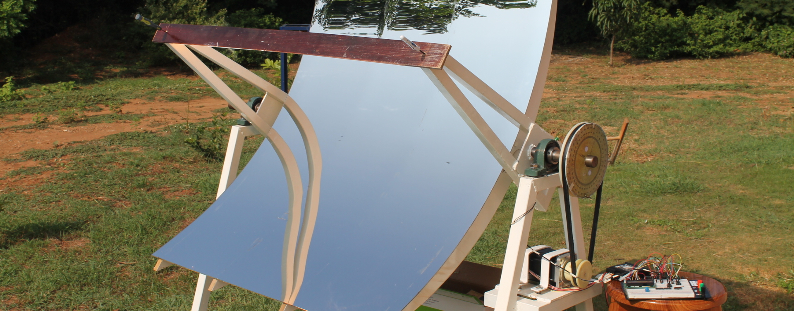
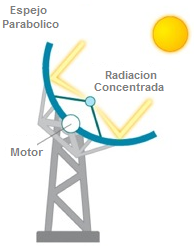
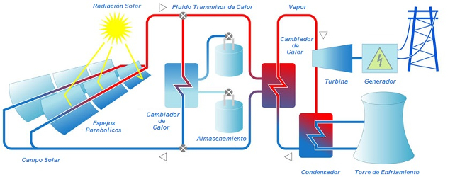

Concentrador Solar de Canal Parabólico
Diseñado y contruido en la Universidad del Istmo
Un colector solar de canal parabólico es un dispositivo que permite colectar la energía solar en una línea, en lugar de colectarla en un punto. Esto permite que se tenga una mayor región de concentración solar. Una de las principales aplicaciones de este tipo de dispositivos es la vaporización de agua para posteriormente generar energía eléctrica.
Implementación
El concentrador parabólico cuenta con un arreglo de espejos en forma de cilindro parabólico. En el foco se coloca un conducto por donde pasa un fluido, como aceite o salmuera. Dependiendo de la longitud de exposición, el área de captación solar y la irradiancia, dicho fluido puede calentarse incluso por encima del punto de ebullición del agua, llegando a temperaturas alrededor de 300 °C. Una vez caliente, el fluido pasa a una caldera donde calienta agua y la convierte en vapor. La energía contenida en el vapor puede ser utilizada para generar electricidad si se pasa por una turbina que haga girar a un generador.
|  |  |
Plato Parabólico
El cono parabólico concentra los rayos del sol en un solo punto, en vez de un conducto lineal. Este arreglo permite generar temperaturas alrededor de los 650 °C.
Ventajas
- - Gran durabilidad, resultan prácticamente inalterables al paso del tiempo.
- - No requieren mantenimiento constante.
- - No producen contaminación atmosférica ni hace ruido.
- - No consumen combustible fósil, se alimentan del sol.
- - Funcionan con luz directa, por lo que siguen funcionando aunque exista ligera nubosidad.
- - Su facilidad de instalación permite su integración en zonas urbanas sobre edificios ya construídos.
- - Sus costos tienden a disminuir y lo hará más si su producción se incrementa.